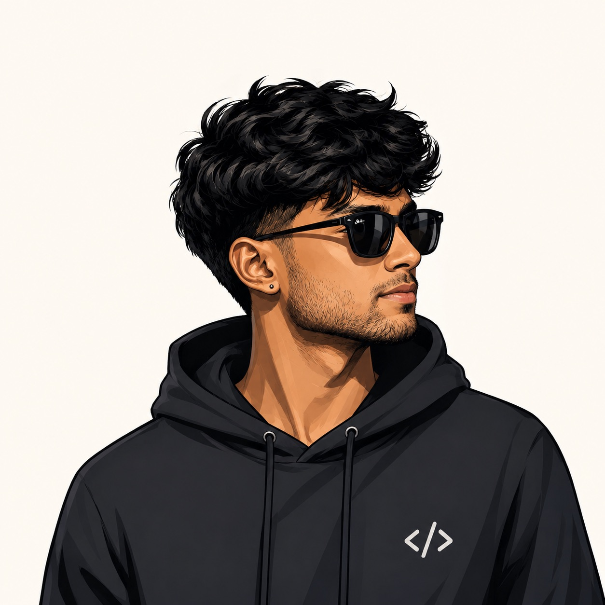

Data & platform systems
Metadata-driven dashboards, SQL optimization and a multi-metric visualization engine at Oracle.
See the experience ↓Backend engineer · Oracle · Bengaluru
I build metadata-driven systems for enterprise dashboards and AI-assisted tooling, and, on my own time, interactive simulations that make complex logic easy to feel.
What I do
I work from the system outward: find the real constraint, make the interface obvious, then sweat the details.
Metadata-driven dashboards, SQL optimization and a multi-metric visualization engine at Oracle.
See the experience ↓A LangGraph and RAG generator that turns a sentence into SQL-driven dashboard widgets.
See the experience ↓React, TypeScript and Supabase, shipped live: Inkwell and the System Design Prototype.
See the products ↓Canvas simulations and games where the algorithm is the point.
Open the playground ↓
Backend systems at Oracle
Aug 2023 — Present
Oracle · Bengaluru
Aug 2021 — Nov 2021
Taproots.ai · Bengaluru
Four builds worth opening first
Smaller builds, each one a single page you can open and play with. Games, simulations, tools and study aids.
A good brief is a good beginning.
Have a product, platform, or idea that needs engineering care and a clear point of view? Tell me what you’re building and where it’s stuck.
Say hello
Bengaluru · IST